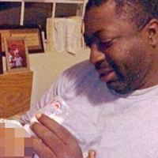
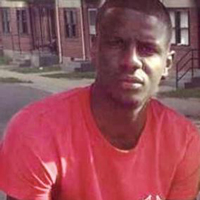

<style>
  iframe {
    vertical-align: middle;
  }

  .remember .about {
    margin-bottom: 10px;
    overflow: hidden;
    font-size: 20px;
  }

  .remember img{
    float:left;
    margin-right: 20px;
  }
</style>

<section class="dark container">
  <article>
    <blockquote class="instagram-media" data-instgrm-version="4" style=" background:#FFF; border:0; border-radius:3px; box-shadow:0 0 1px 0 rgba(0,0,0,0.5),0 1px 10px 0 rgba(0,0,0,0.15); margin: 1px; max-width:700px; padding:0; width:99.375%; width:-webkit-calc(100% - 2px); width:calc(100% - 2px);"><div style="padding:8px;"> <div style=" background:#F8F8F8; line-height:0; margin-top:40px; padding:50% 0; text-align:center; width:100%;"> <div style=" background:url(); display:block; height:44px; margin:0 auto -44px; position:relative; top:-22px; width:44px;"></div></div><p style=" color:#c9c8cd; font-family:Arial,sans-serif; font-size:14px; line-height:17px; margin-bottom:0; margin-top:8px; overflow:hidden; padding:8px 0 7px; text-align:center; text-overflow:ellipsis; white-space:nowrap;"><a href="https://instagram.com/p/bv8j5LlOZj/" style=" color:#c9c8cd; font-family:Arial,sans-serif; font-size:14px; font-style:normal; font-weight:normal; line-height:17px; text-decoration:none;" target="_top">A photo posted by DeRay (@iamderay)</a> on <time style=" font-family:Arial,sans-serif; font-size:14px; line-height:17px;" datetime="2013-07-14T14:08:09+00:00">Jul 14, 2013 at 7:08am PDT</time></p></div></blockquote>
    <script async defer src="//platform.instagram.com/en_US/embeds.js"></script>
    <h1 style="font-size: 50px;">
      DeRay Mckesson<span class="role">, activist</span>
    </h1>

    <p>
      A Teach for America alumni, DeRay was a Senior Director at
      Minneapolis Public Schools when he joined the protest in Ferguson, Missouri
      following the killing of Michael Brown.
    </p>
    <p style="margin-bottom: 50px;">
      He is now recognized as
      <a target="_blank" href="http://fortune.com/worlds-greatest-leaders/johnetta-elzie-and-deray-mckesson-11/">
        one of the World's Greatest Leaders
      </a> by Fortune for his leadership in the
      <a target="_blank" href="https://twitter.com/search?q=%23BlackLivesMatter">
      #blacklivesmatter</a> movement.
    </p>
  </article>
</section>
<section class="container">
  <article>
    <h2 style="margin-top:0; margin-bottom: 40px;">
      <a
        target="_blank"
        href="https://twitter.com/search?q=%23BlackLivesMatter"
      >
        #blacklivesmatter
      </a>
    </h2>

    <div class="remember">
      <div class="about">
        
        <h3 class="life">Clementa C. Pinckney</h3>
        <div>
          Father of two children, pastor, and senator,
          <a target="_blank" href="https://en.wikipedia.org/wiki/Charleston_church_shooting">
            Pinckney was murdered by a racist terrorist while at a Bible study</a>.
            Pinckney held rallies and pushed for police reform after
            <a target="_blank" href="https://www.youtube.com/watch?v=kXO3Ix_GIyI&bpctr=1436596674">
              a police officer murdered Walter Scott</a>.
        </div>
      </div>

      <iframe width="700" height="400" src="https://www.youtube.com/embed/z0fDAKq9FDc?start=251&rel=0" frameborder="0" allowfullscreen></iframe>
    </div>

    <hr>

    <div class="remember">
      <div class="about">
        
        <h3 class="life">Eric Garner</h3>
        <div>
          Father of six children and grandfather of three,
          his youngest was 3-months-old when he was
          strangled to death by a police officer for selling cigarettes.
          The police officer was not indicted.
        </div>
      </div>

      <iframe width="700" height="400" src="https://www.youtube.com/embed/LfXqYwyzQpM?start=75&rel=0" frameborder="0" allowfullscreen></iframe>
    </div>

    <hr>

    <div class="remember" style="margin-bottom: 50px;">
      <div class="about">
        
        <h3 class="life">Freddie Gray</h3>
        <div>
          25-year-old Freddie Gray died due to a broken neck while in police custody.
          On May 1, 2015, State Attorney Marilyn Mosby filed charges against the six police officers
          involved in his killing.
        </div>
      </div>

      <iframe width="700" height="400" src="https://www.youtube.com/embed/w5EIjwn1g6k?start=154&rel=0" frameborder="0" allowfullscreen></iframe>
    </div>
  </article>
</section>
<section class="dark container">
  <div>
    <p style="margin-bottom:10px;">
      &ldquo;<a href="http://www.nytimes.com/2015/05/10/magazine/our-demand-is-simple-stop-killing-us.html#story-continues-12"
      >Twitter is the revolution, Ms. Nash.</a>&rdquo;
    </p>
    <p class="byline">
    - DeRay to
      1960s Civil Rights Movement leader <a target="_blank" href="https://en.wikipedia.org/wiki/Diane_Nash">Diane Nash</a>.
    </p>

    <hr>

    <div style="width:500px; margin: 50px auto 0 auto;">
      <blockquote class="twitter-tweet" lang="en"><p lang="en" dir="ltr">I continue to talk about race because race continues to impact my life &amp; the lives of those who look like me.&#10;&#10;I&#39;m not the enemy, racism is.</p>&mdash; deray mckesson (@deray) <a href="https://twitter.com/deray/status/612720574578737152">June 21, 2015</a></blockquote>
      <script>!function(d,s,id){var js,fjs=d.getElementsByTagName(s)[0],p=/^http:/.test(d.location)?'http':'https';if(!d.getElementById(id)){js=d.createElement(s);js.id=id;js.src=p+"://platform.twitter.com/widgets.js";fjs.parentNode.insertBefore(js,fjs);}}(document,"script","twitter-wjs");</script>
    </div>

    <hr>

    <p style="text-align: center; margin-bottom: 50px;">
      <a target="_blank" href="https://twitter.com/intent/follow?region=follow_link&screen_name=deray">
      Follow DeRay on Twitter</a>
      or <a target="_blank" href="http://fergusonresponse.tumblr.com/">join a protest</a>.
    </p>
  </div>
</section>


<section class="container">
  <nav>
    <a href="../maya-angelou/">
      Maya Angelou
    </a>
    <a href="../yuri-kochiyama/">
      Yuri Kochiyama
    </a>
  </nav>
</section>
